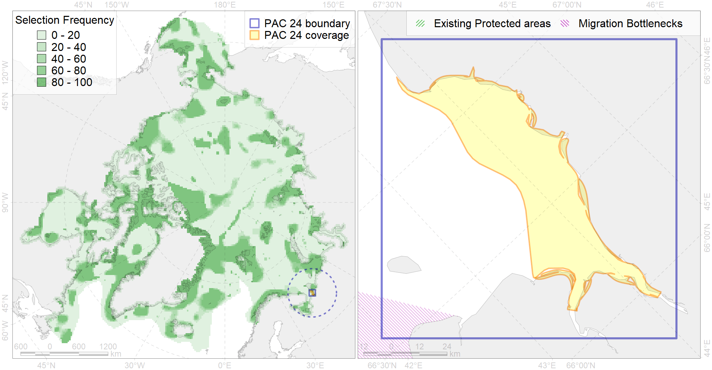

Region 24
Region 24
“ArcNet” scenario 33 achievement for region 24.
Use Accenter for advanced mode.

0
CFs inside of Region completely
2
CFs inside of Region at quarter
2
Complete-targets achievement by Region
3
Half-targets achievement by Region
| CF | Name | Target Achievement for Region | Proportion of Target Achievement in Region | Amount Proportion in Region |
|---|---|---|---|---|
| 7165 | IV.1.2. Mezen Bay shelf | 102.7% | 75.0% | 40.1% |
| 8025 | intertidal zone of the Barents Sea LME | 107.1% | 46.0% | 32.2% |
| 8016 | Barents Sea estuaries | 40.6% | 33.4% | 22.3% |
| 5035 | Beluga of the White Sea summer core distribution | 27.8% | 27.0% | 21.9% |
| 8032 | Salt marshes of the Barents Sea LME | 19.2% | 19.1% | 10.5% |
| 3125 | polynya White | 63.8% | 16.1% | 8.2% |
| 4071 | Local forms of the White-Sea herring (Clupea pallasii) (F8) | 22.8% | 9.7% | 5.9% |
| 5034 | Beluga of the White Sea summer distribution | 12.6% | 7.7% | 3.3% |
| 2026 | Harp seal whelping areas in the White Sea | 3.6% | 3.6% | 2.9% |
| 4020 | Feeding area of the White-sea vendace (Coregonus sardinella marisalbi) (F21) | 9.3% | 4.1% | 2.4% |
| 4089 | Fish zoogeography, Arctic Region, Subarctic Transitional-Atlantic Province, Mesen’ – Pechora aquatory of the Barents District | 5.5% | 2.4% | 1.2% |
| 3016 | Fast ice distribution in the White Sea | 16.7% | 2.9% | 1.1% |
| 2003 | Bearded seal whelping areas in the Barents Sea | 3.7% | 1.6% | 1.0% |
| 2041 | Ringed seal whelping areas in the Barents Sea | 3.5% | 1.5% | 0.9% |
| 4072 | Range of the Pechora herring (Clupea pallaii suworowi) (F 9) | 6.9% | 2.0% | 0.9% |
| 4043 | Range of Nawaga (Eleginus nawaga) (F37) | 5.2% | 1.5% | 0.7% |
| 4021 | Feeding area of the Inconnu (Stenodus leucichthys nelma), Euro-Asian populations (F 22) | 1.2% | 1.0% | 0.4% |
| 4008 | Feeding / nursery area of the Arctic Cisco (Coregonus autumnalis), Eurasian populations (F 14) | 0.8% | 0.8% | 0.4% |
| 4052 | Range of the Fourhorn Sculpin (Myoxocephalus quadricornis) (F 45), American populations | 10.4% | 0.7% | 0.3% |
| 4030 | Feeding area of the Arctic charr (Salvelinus alpinus), anadromous populations (F28) | 0.8% | 0.7% | 0.3% |
| 3026 | Marginal Ice Zone distribution in April in the Barents Sea LME | 1.9% | 0.5% | 0.3% |
| 4054 | Range of the Shorthorn Sculpin (Myoxocephalus scorpius) (F 46), European populations | 6.9% | 0.5% | 0.2% |
| 7164 | IV.1.1. Gorlo Strait shelf | 0.6% | 0.6% | 0.2% |
| 4058 | Range of the Arctic flounder (Liopsetta glacialis) (F48) | 2.9% | 0.4% | 0.2% |
| 4006 | Feeding/nursery area of the Pacific rainbow smelt (Osmerus dentex) (F12) | 0.9% | 0.3% | 0.2% |
| 4027 | Feeding/migration area of the Atlantic salmon (Salmo salar) American populations (F27) | 0.8% | 0.5% | 0.2% |
| 4057 | Range of the American Plaice (Hippoglossoides platessoides) (F 47), American populations | 4.7% | 0.4% | 0.2% |
| 4049 | Range of the Haddock (Melanogrammus aeglefinus) (F 42) | 2.2% | 0.4% | 0.1% |
| 4046 | Range of the Thorny Skate (Amblyraja radiata) (F 3) | 1.0% | 0.2% | 0.1% |
| 4045 | Feeding/migration area of the Pink Salmon (Oncorhynchus gorbuscha), native distribution (F23) | 1.1% | 0.2% | 0.1% |
| 4003 | Range of the Atlantic Capelin (Mallotus villosus) (F10) | 1.8% | 0.2% | 0.1% |
| 4017 | Feeding/ migration area of the Greenland Shark (Somniosus microcephalus) (F1) | 0.2% | 0.1% | 0.1% |
| 2017 | Grey seal distribution range | 0.4% | 0.1% | 0.0% |
| 4094 | Subarctic fish complex of the Barents region | 0.4% | 0.1% | 0.0% |
| 5112 | Arctic Cetaceans (beluga, bowhead, narwhal) winter habitats as predicterd by MIZ | 0.1% | 0.0% | 0.0% |
| 4041 | Range of the Polar Cod (Boreogadus saida) (F35) | 0.2% | 0.1% | 0.0% |
| 7067 | I.1.1.4. Shelf troughs | 0.2% | 0.0% | 0.0% |
| 1009 | Atlantic Walrus Summer Distribution in Pechora and Kara region | 0.0% | 0.0% | 0.0% |
| 7064 | I.1.1.1. Coastal domain in the Barents Sea | 0.0% | 0.0% | 0.0% |